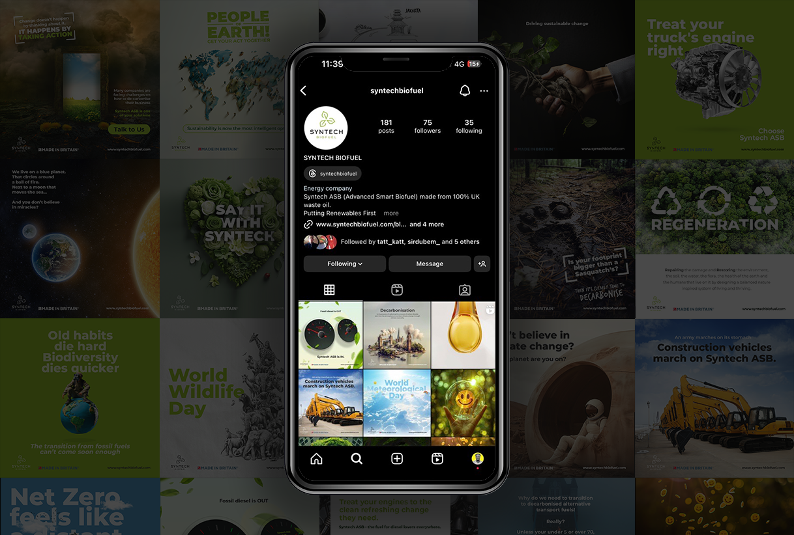
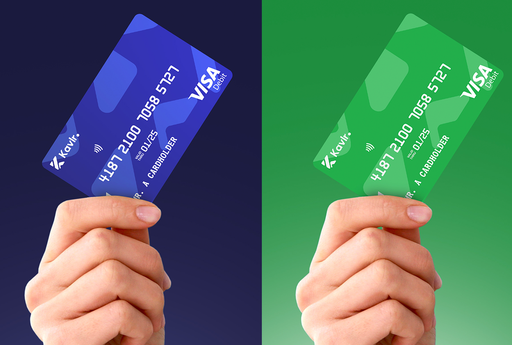

The Opportunity
Take Back The Mic is a pan-African music and cultural competition operating across 50 countries, backed by MTN and partnered with Mastercard. It required a design system that could unify wildly different markets, from Lagos to Nairobi to Dubai, under one visual language while powering a complex digital ecosystem including virtual festival, crypto rewards system, and Mastercard-partnered digital card.
The Challenge
Build a complete visual identity that works at billboard scale and app-icon scale. Design an interactive virtual festival platform. Create UX and visual design for a digital card product. Unify three seasons of content, competition mechanics, and cultural storytelling into a cohesive brand experience deployable simultaneously across dozens of countries.
The Approach
The brand system was built modular: a core identity kit that could flex across regions without losing coherence. Bold typography, high-contrast color, and visual language rooted in energy and cultural pride. The Kola crypto rewards system integrated blockchain mechanics into a familiar entertainment interface, allowing users to exchange crypto points for mobile data powered by MTN. The virtual festival was designed as an immersive digital environment, not just a streaming page.

The Execution
Across three seasons, the design work included: complete brand identity system with logo, typography, color palette, and brand guidelines; interactive virtual festival platform (Webby-nominated); Kola crypto rewards interface and campaign materials in partnership with MTN; digital card product design that contributed to securing the Mastercard partnership; social media campaign assets deployed across 50+ countries; outdoor advertising, billboard designs, and environmental graphics; and complete UX flow for audience participation, voting, and rewards.


Outcome
The design work achieved measurable outcomes at significant scale: 1.1 billion media impressions across 50 countries, a Webby Award nomination in 2023 for the interactive festival, and a multi-year Mastercard partnership secured through the quality and ambition of the digital card product design. The brand became synonymous with pan-African cultural ambition. A visual system that worked equally well on a Lagos billboard and in a Dubai boardroom.